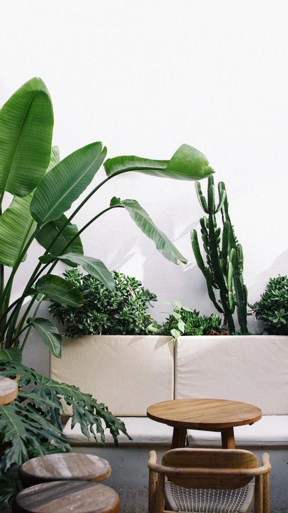
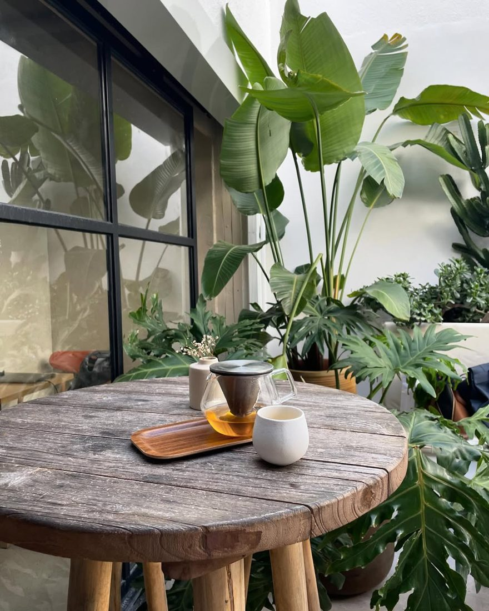
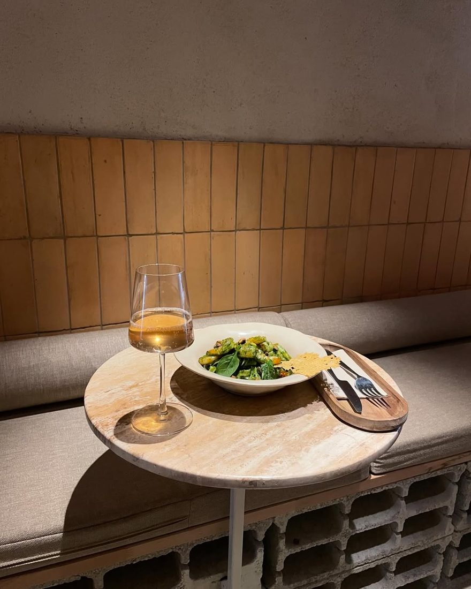
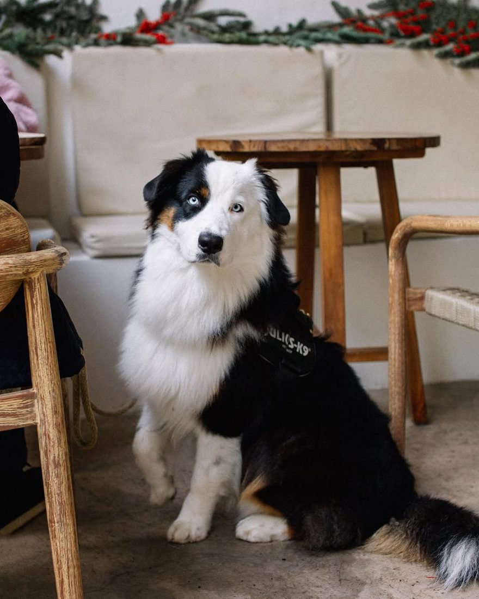
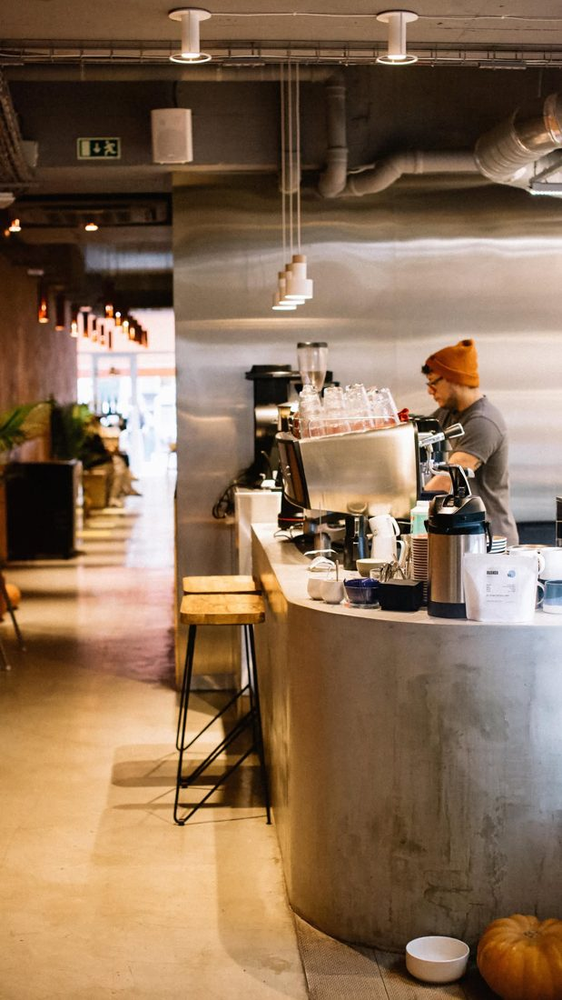

Tomorrowat 9


Breakfast and brunch on Rua Viriato, Lisbon, with specialty coffee. Open every day, 8:00 to 17:00.
Plates you'll crave.


Green Toast, Good Salmon, Citrus French Toast and Roasted Pepper Hummus. Brunch is served every day from 8 to 5.See the full menu


Indoor comfort, outdoor charm.
A cosy nook inside, a sunny garden terrace outside, and your dog is welcome at both.
See more on Instagram



Every day,
8 to 5.
- HoursEvery day, 8:00 to 17:00
- AddressRua Viriato 9B, 1050-227 Lisboa
- Book a tableWhatsApp +351 927 703 617
- DogsWelcome
- MenuBrunch, salads, sweets
- Beans to take homeSpecialty coffee from Kawa and Koyo
Coffee, your way.
Classic espresso, pour-over perfection and the magic of filter coffee, with the Latte Miso Caramel for early breakfasts.

Want it at home? Take a bag of specialty beans, from Kawa and Koyo, and our baristas will guide you to your perfect match.

- Open
- Every day
- Hours
- 8:00 to 17:00
- Dogs
- Welcome
- Terrace
- Garden
Book a table on WhatsApp, or just walk in. We open every day at 8.
Table for two?WhatsApp +351 927 703 617@tomorrowat9_cafeOpen in MapsRua Viriato 9B, Lisboa. Every day 8:00 to 17:00.